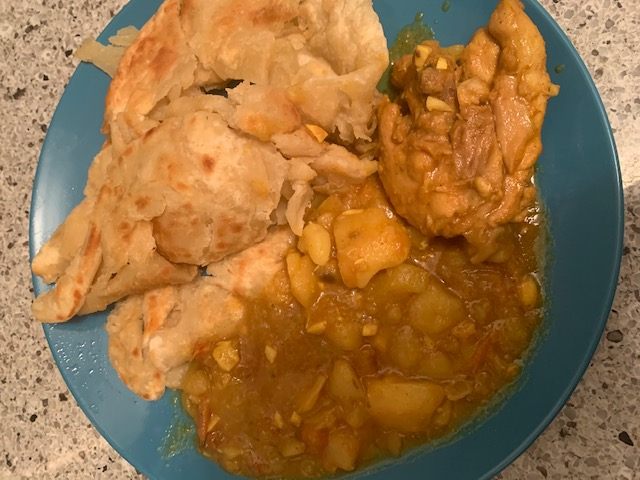
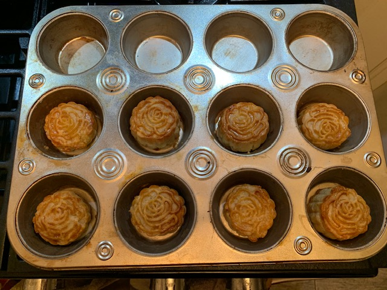

Carina Corbin
Software Developer, Stack Overflow
carinabcorbin (at) gmail.com
- Over the years, I have grown comfortable with the following programming languages: Java, Python, Pyspark, SQL, JavaScript, C#
- I love learning languages. In addition to my native tongue English, I also speak Mandarin Chinese, Korean, and some Spanish!
- I love going to the library, so you will often find me with a book in my bag. I also love writing short stories (maybe one day it will be a novel!)
- Music is everything to me! I love to dance and previously played piano and guitar. I have these instruments at home, and don't practice as much as I should.
- A recent pastime of mine has been cooking seemingly difficult recipes. Some of my favorites have been mooncakes and Trinidian style roti!  